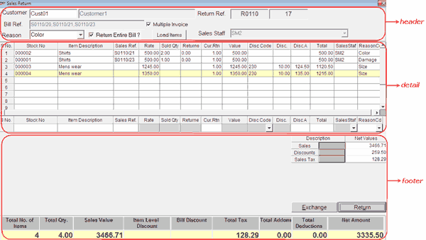

This option is used to carry out sales returns and exchanges of merchandise billed earlier. The current sales return functionality supports:
Full or partial return of items from multiple bills in a single return transaction
Return of items without bill references along with items that have references
In a bill, where items purchased under some promotional scheme (only in the case of offers) are to be returned/ exchanged, then all the items mentioned in the bill need to be returned/ exchanged. For example, an item A with an offer "Buy two, get one free" when billed, is to be returned due to some reason. The customer had bought two Nos. of item A and had obtained one No. of item A free according to the offer. So while returning, the customer has to return all the three items.
The details accepted during sales return can be grouped as shown.

Click the links to learn more about each group.
Header: The header part of the sales return window allows you to accept details like customer code, bill reference (document prefix and document number of the bill/(s) and reason code. Also, the details like document prefix and the document number for the bill return are displayed in the header part.
Detail: The detail part of the sales return window has item details grid as well as direct entry grid. The item details of the stock items selected for return/ exchange are displayed in the item details grid. The direct entry grid is used to accept the items for return through direct scanning.
Footer: The footer part of the sales return window displays the details like total sales value of the items, item level and bill level discounts, total add-ons and deductions and net amount of the sales return document. Apart from sales return document totals, you are exposed to a separate grid, which gives total sales value, discounts, sales tax, add-ons (if any) and deductions (if any) exclusively.